Yutong Chen 陈宇同
HCI Researcher
Creative Technologist
Interaction Designer
Shenzhen / London
Biography
I am an HCI researcher and creative technologist studying how interactive and generative systems shape cognition, judgment, agency and creative practice. My current work focuses on feedback-driven human–AI co-creation and how sustained interaction changes the ways people think, explore possibilities, make creative decisions and experience control over their work.
我是 HCI 研究者和创意技术实践者，研究交互与生成式系统如何影响人的认知、判断、能动性与创造实践。目前关注基于反馈循环的人机共创，以及持续的人机互动如何改变思考、探索与创作决策。
Education
MA Information Experience Design | Royal College of Art, London · Expected 2027皇家艺术学院 · 信息体验设计硕士 · 伦敦
Enrolment confirmation / 硕士在读证明
BA Digital Media Art | Harbin Institute of Technology, Shenzhen · GPA 3.415/4.0 · IELTS 6.0哈尔滨工业大学（深圳）· 数字媒体艺术学士
Academic transcript · 2 pages / 本科成绩单（两页）
Degree & graduation certificates / 学位及毕业证明
HKUST InnoBay Summer Camp | Interdisciplinary Innovation Programme, Hong Kong香港科技大学 InnoBay 科创营 · 跨学科创新项目
Repin Academy Preparatory Studio | Advanced Sketch Training · Ivan Logvinov Studio列宾美术学院南京预科班 · 素描高级研修
Research experience
Studio for Narrative Spaces, City University of Hong Kong | Research Project Member · Remote香港城市大学 · Studio for Narrative Spaces · 线上研究项目成员
Drown in Algae · HKUST InnoBay | Researcher and Designer; field research, biomaterials and immersive communication研究与设计：海洋污染、生物材料与沉浸式传播
Publications & manuscripts
Experiencing Cognitive Friction through Embodied Interaction in Virtual Reality | AIVRID 2026 · First author · Accepted第一作者 · 已录用
Visceral Interaction: Operationalizing Cognitive Friction through Rule-Based VR Economic Simulation | HCI International 2026, Late Breaking Work · First author · AcceptedHCII 2026 Late Breaking Work · 第一作者 · 已录用
Unsettling the Auspicious Pine: A Digitally Mediated Moving-Image Installation for Reflective Reinterpretation | ACM Creativity & Cognition 2026 · Poster · pp. 1616–1621 · DOI: 10.1145/3803784.3816864
Excremental Economy: A Rule-Based Speculative System for Staging Bodily Commodification and Unequal Value Extraction | ACM Creativity & Cognition 2026 · Poster · pp. 1622–1626 · DOI: 10.1145/3803784.3816865
How Community Feedback Affects Vibe Coding Creative Processes | Manuscript under review for ACM CHI 2027
Sketches as Previews: How Humans Sketch Visual Representations for Videos | Manuscript under review for ACM CHI 2027
Selected professional & design experience
China (Shenzhen) International Cultural Industries Fair | Invited exhibiting designer · The Forbidden Hue and Closet X中国（深圳）国际文化产业博览交易会 · 受邀参展设计师
ZTE Corporation | UX Design Intern · System Product Research Center中兴通讯系统产品研究中心 · 用户体验设计实习
Maker Faire Shenzhen | Game and interactive installation designer; Best Booth Award in 2023游戏与交互装置设计；2023 年获最佳展位
Institute of Future Health, SCUT | Logo and visual identity designer华南理工大学未来健康研究院 · 标志与视觉识别设计
Yuanling Barrier-Free Demonstration Street | Accessibility research and inclusive public-space design园岭街道全域无障碍示范街区 · 无障碍调研与设计
UNFOLD Shenzhen Art Book Fair | Exhibiting designerUNFOLD 深圳艺术书展 · 参展设计师
Selected awards
2026 · NCDA · Provincial Second Prize / 省赛二等奖
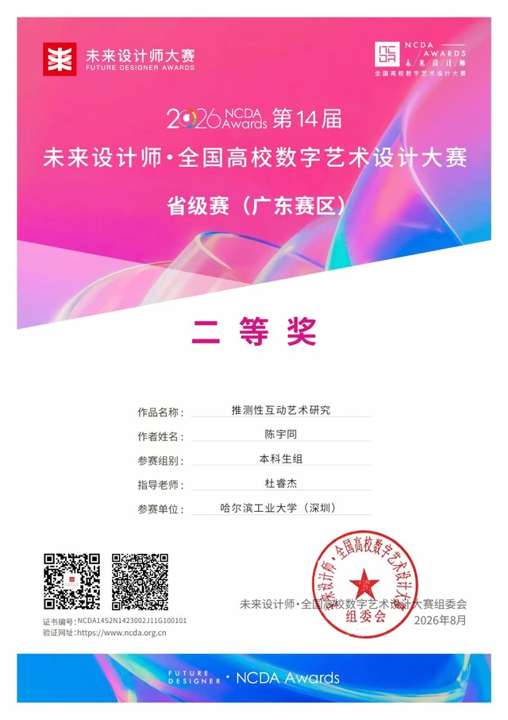
NCDA · Provincial Second Prize / 省赛二等奖
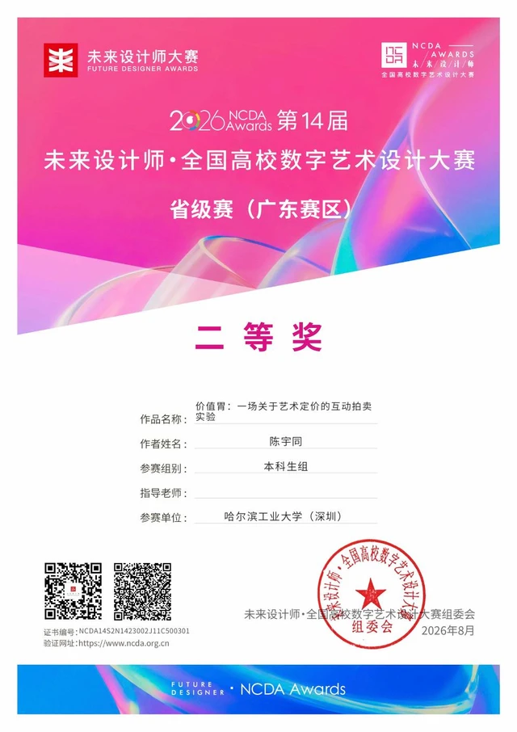
New Quality Design Awards · Student Award / 新质点设计奖学生奖
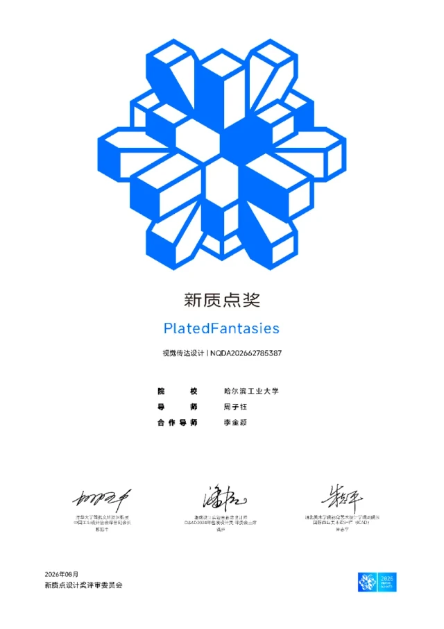
Asian Vanguard Art & Design Award · Excellence Award / 亚洲先锋艺术设计奖优秀奖
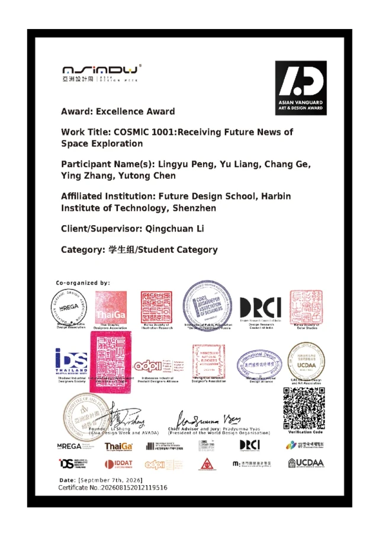
2026 · China Good Creativity Competition · National First Prize / 全国一等奖
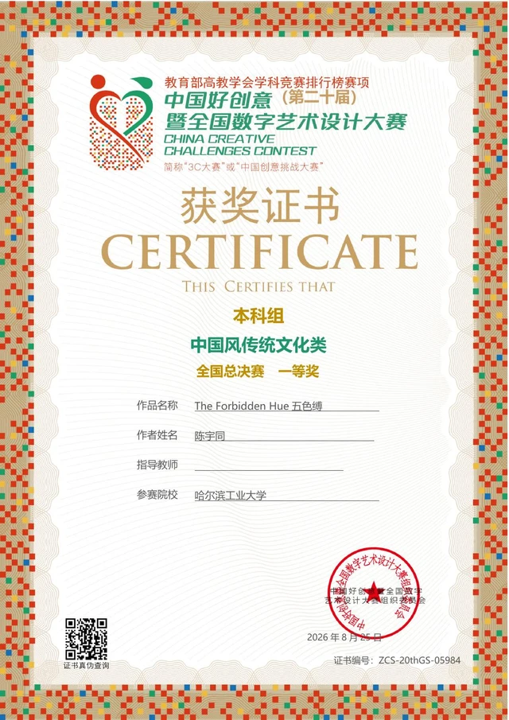
2025 · NCDA · Provincial First Prize / 广东赛区一等奖
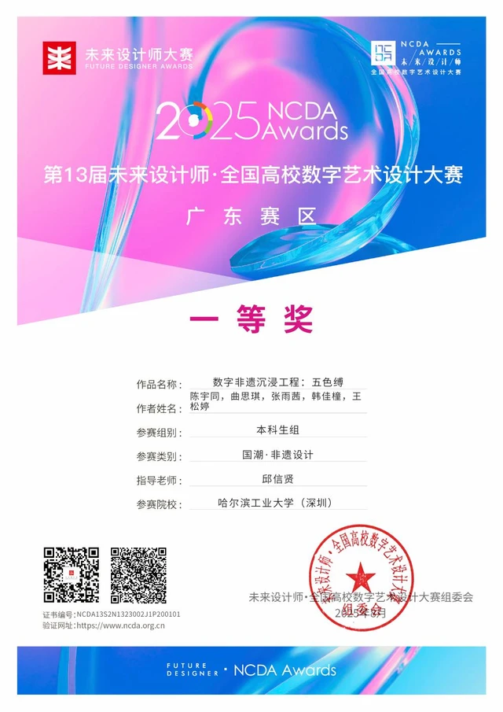
China Good Creativity Competition · Third Prize / 黑龙江赛区三等奖
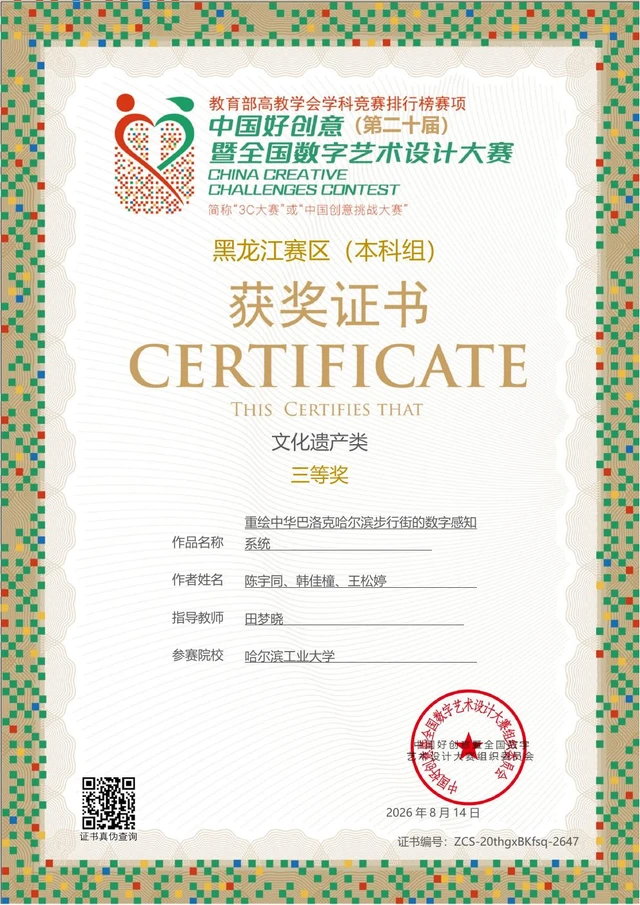
NCDA · Provincial First Prize / 广东赛区一等奖
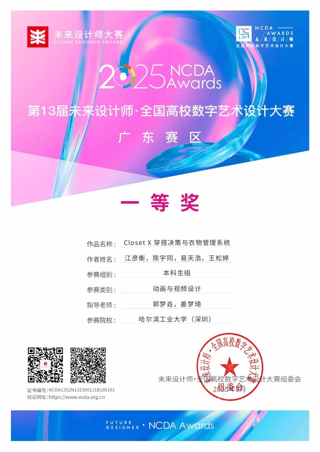
NCDA · National Final Second Prize / 全国总决赛二等奖
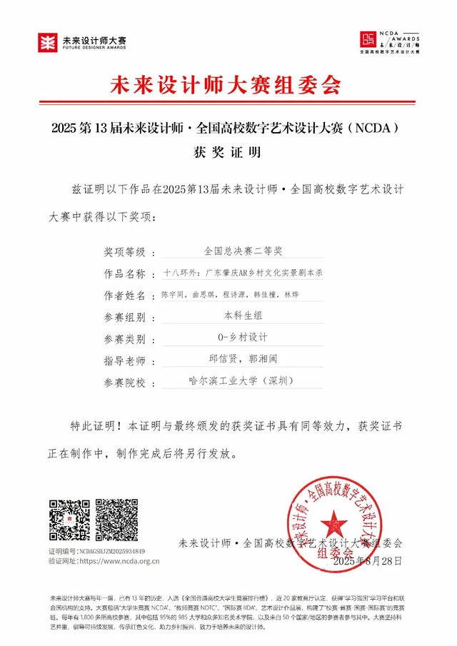
NCDA · Heilongjiang Provincial Third Prize / 黑龙江赛区三等奖
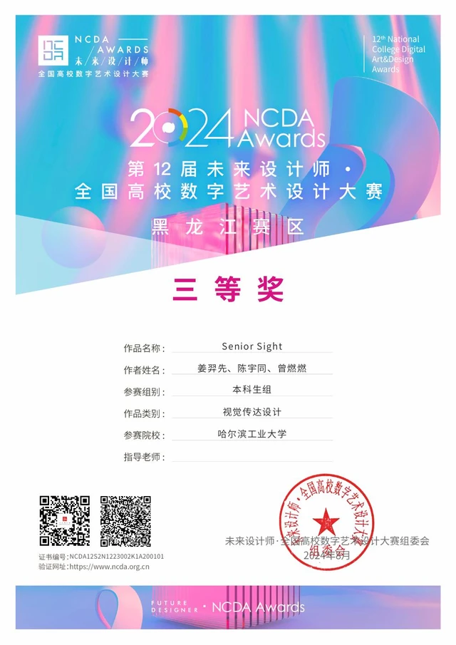
National College Student Industrial Design Competition · Heilongjiang Third Prize
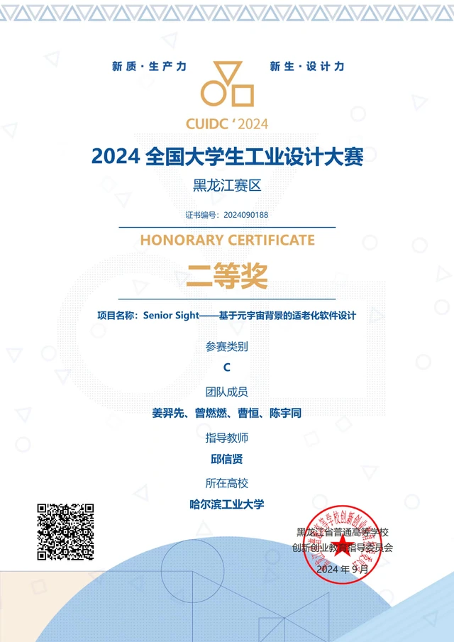
Skills
UX Research · User Studies · Field Interviews · Site Observation · Accessibility Audits · Interactive Prototyping
Figma · Unreal Engine · TouchDesigner · Blender · Rhino 3D · Arduino · Adobe Creative Suite · Procreate
Human–Computer Interaction · Creativity & Cognition · Human–AI Interaction · Human–AI Co-Creation · Creative Agency · Embodied Interaction
Mandarin Chinese · Native | English
Contact / 联系
- Research & business学术与商业合作
- chenyutong11126@gmail.com
- RCA studies在校学习
- 10074220@network.rca.ac.uk
- Applications & visiting study申请与访学
- chenyutong26f@163.com
- China collaborations国内联系与合作
- 1955172976@qq.com
- Personal日常联系
- a17361916842@icloud.com